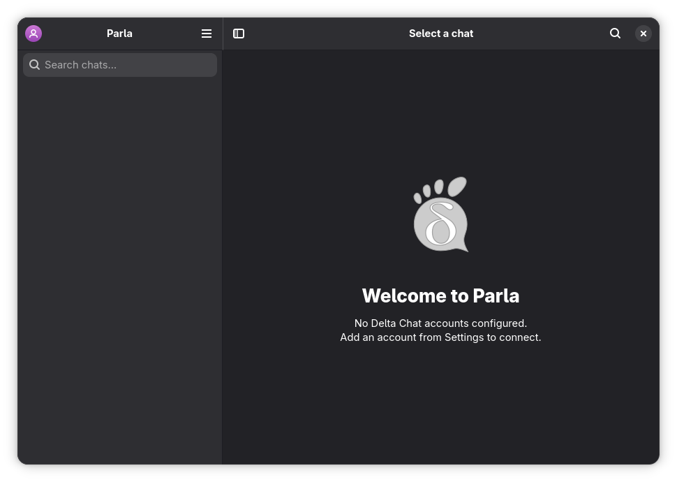
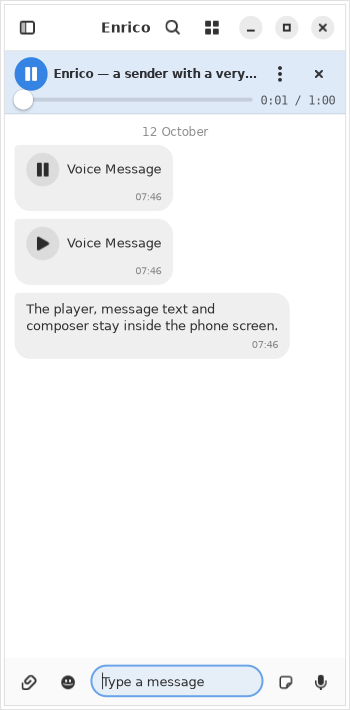
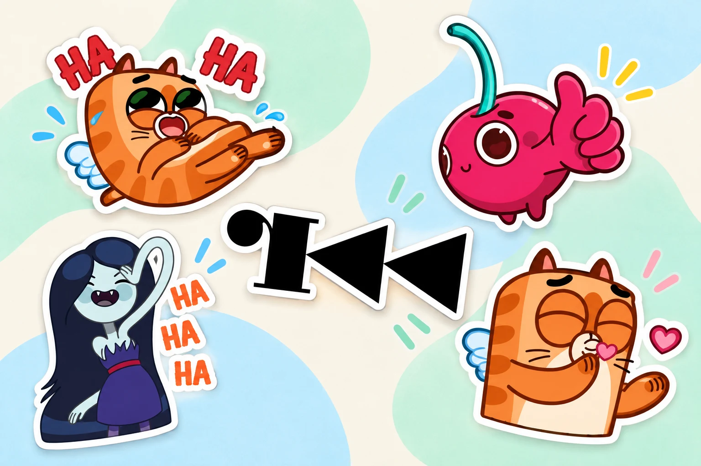
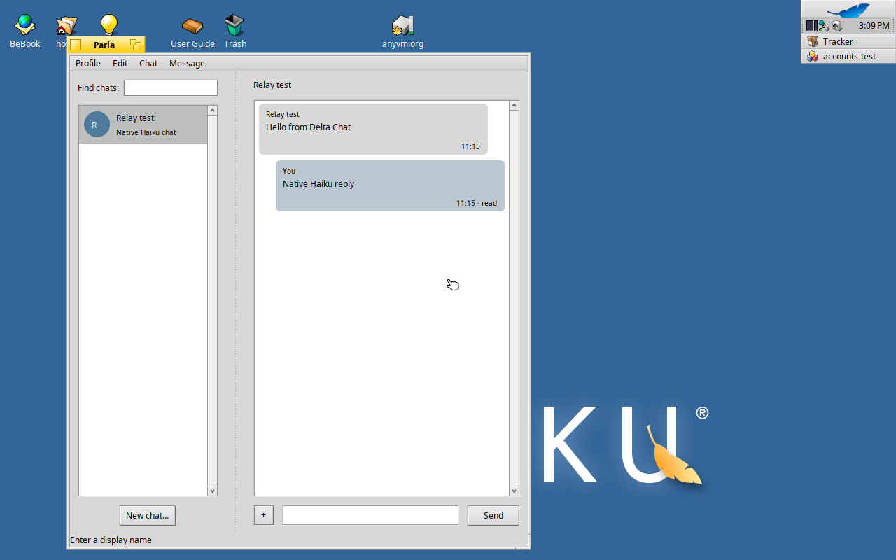

GNOME, down to the details.
GTK4, libadwaita, familiar controls and an adaptive layout. A real desktop app, written in Vala, with an interface that belongs.
Say hello to native messaging
Your people, a little closer. A lightweight, native Delta Chat client that feels right at home on GNOME.
Linux · Windows · macOS Haiku native preview

All the chat. A little less baggage.
Catch up with a friend. Make plans in a group. Send that sticker that says it better. Parla brings everyday instant messaging to a native desktop app.
GTK4, libadwaita, familiar controls and an adaptive layout. A real desktop app, written in Vala, with an interface that belongs.
A lean native interface designed to keep RAM use low. Keep a conversation open while your computer gets on with everything else.
Memory use varies with chats, media and enabled mini-apps.
Chat with other Delta Chat users, across their favorite clients. Decentralized messaging over email, with end-to-end encryption handled by the Delta Chat core.
Meet the Delta Chat network ↗From a quick hello to the whole story
Some things need a few words.
Others need a voice, a photo, or a very good sticker.
Send stickers, save the ones you receive, and build your own local packs. Pause animations when you want a quieter chat. Pick your first pack ↓
Listen to voice messages with playback controls that stay in reach. Optional local Whisper transcription turns downloaded voice notes into text.
Reply, react, edit, forward and pin messages. Start a one-to-one chat or bring everyone into a group.

Small stickers. Big personality.
A cherry with attitude. A kiss from a kitty. A little vampire energy. Give your next hello a face of its own.
Ready-to-use GIF and WebP files. No Telegram account or conversion needed.

Everyday feelings, extra juicy.
34 animated stickers · in the starter ZIPArt: Yuliya Kamenskaya. Animation: Santiago Parmomento. Original Telegram pack ↗
Send a little feline affection.
25 animated stickers · in the starter ZIPArtist not yet identified. Original Telegram pack ↗
A mood for your inner vampire.
20 animated stickers · in the starter ZIPA tiny pack for curious hackers.
6 static stickers · in the starter ZIPIndividual artists unverified. Original Telegram pack ↗
Artwork is separate from Parla’s software license. Conversion and redistribution permissions remain unverified. See credits, sources & license status.
Quit Parla, extract your ZIP, then merge its stickers folder into Parla’s data folder. For just one pack, copy the files starting with its name. Reopen the app and pick a sticker beside the message composer.
Already have stickers? Keep your existing files when merging. On macOS, copy the files inside the folder.
Little details. Everyday superpowers.
Browse each chat’s images, stickers, files, audio and video in a media gallery. Jump straight back to the message behind a memory.
Search a conversation’s history or search chats and messages from the sidebar. Find the plan, the link, or the thing you almost forgot.
Switch chats, search and compose from the keyboard. Pick bubble, compact IRC or workspace layouts. Keep multiple profiles close by.
Share Webxdc mini-apps and do more together in a conversation. Experimental support is available on supported Linux, Windows and macOS builds.
AppImage builds exclude Webxdc. Mini-apps can be disabled in Settings.
Explore Webxdc support ↗More ways to join in. Keyboard navigation and screen-reader support, including Orca, NVDA, JAWS and VoiceOver. Read the accessibility guide ↗
Hello is only a few steps away
Download Parla. Create a profile with a chatmail relay, use an existing email account, or link another device.
Exchange an invitation link or QR code. Meet friends using Parla or another Delta Chat client.
Start a chat, gather a group, share files and send a voice note. Pick the layout that feels like you.
A native hello, wherever you are
Get Parla for your desktop. Free software, yours to explore.
Made for GNOME.
At home on your Linux desktop.
Your chats, on Windows.
Download, extract, say hello.
Extract the archive and launch parla.exe.
A little Parla for your Mac.
Apple silicon and Intel builds.
Open the disk image and move Parla to Applications. See release notes for system requirements.
A separate native client.
Built with Haiku’s Interface Kit.
Work in progress; features differ from the GTK app. Meet the native port ↓
The Haiku port takes its own path: a native C++ client using Haiku’s Interface Kit and the real Chatmail core. Native menus, system colors, notifications and a familiar place for your conversations.
A development preview, with ongoing interoperability testing and feature work. It does not yet have feature parity with Parla for GNOME.
Follow Parla for Haiku
A name made for conversation
A small word with plenty to say.
A familiar sound across languages.
Parla: speech, or a person’s way of speaking. A fitting name for a place to express yourself.
Gran Diccionari de la llengua catalana ↗Parla! means “Speak!” The same form also means “he/she speaks.” An invitation to start a conversation.
Treccani · parlare ↗Parla can mean chatter, or, colloquially, a gift for talking. Every group has someone with a little extra.
Real Academia Española · parla ↗